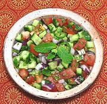

|
Kachumber - Tomato & CucumberIndia - Kachumber / Kuchumber | ||||
| Serves: Effort: Sched: DoAhead: |
4 side ** 23 min Yes |
This version is the most common, but many variations are made. They are most commonly soured with lemon (in the north) or lime (in the south), but are also sometimes soured with vinegar or yogurt. See also Comments. | |||
|
5 12 10 1 5 1/4 1/2 1 1/3 |
oz oz oz c t T t |
Onion, red Tomatoes Cucumbers (1) Chili, green (2) Mint Leaves Cilantro Cumin seed Lemon Juice Salt |
Make - (23 min)
|